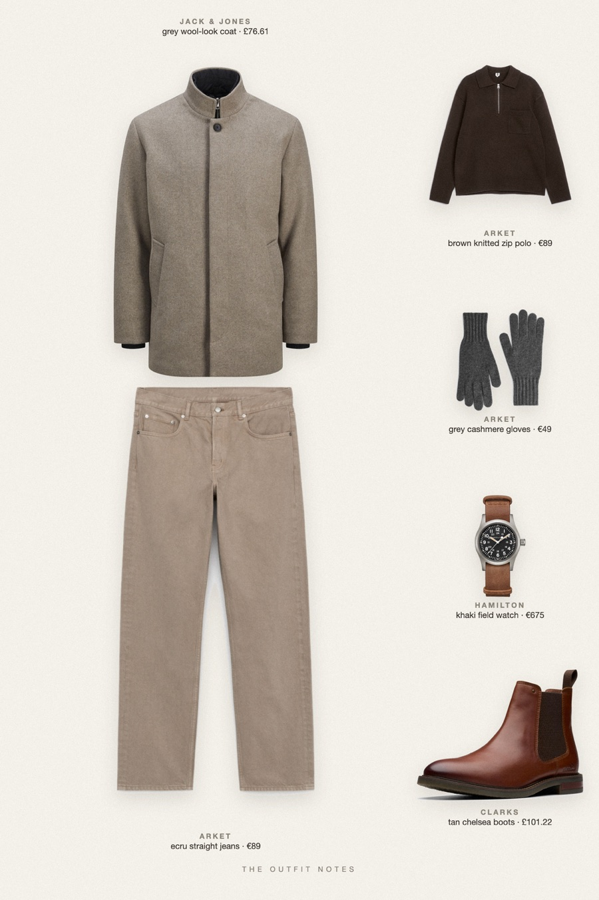
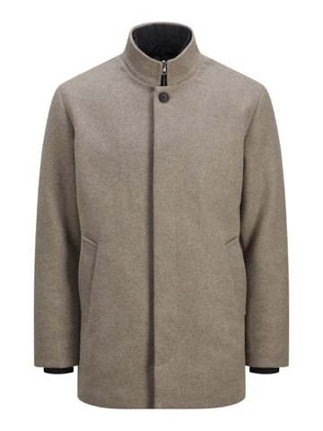
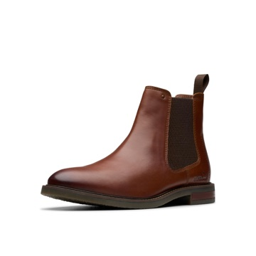

Brooklyn Ecru
grey coat, brown polo

Winter outfit men can repeat all season: a grey wool-look coat over a dark brown zip knit polo, ecru jeans, tan leather chelsea boots and grey gloves, with a Hamilton Khaki Field watch. Warm, cold weather game day layers that still read quiet luxury and streetwear-clean.
The pieces
This page contains affiliate links: if you buy through them, we may earn a commission at no extra cost to you. Disclosure.

Jack & Jones
Grey wool-look coat
Shop ARKET
ARKET
Brown knitted zip polo
Shop ARKET
ARKET
Ecru straight jeans
Shop
Clarks
Tan chelsea boots
Shop ARKET
ARKET
Grey cashmere gloves
Shop Hamilton
Hamilton
Khaki field watch
Shop
Prices are indicative, taken when the look was published, and may have changed. Pictures of the outfit are AI-generated illustrations of real products; the product photos are the retailers' own.
Published 2 October 2026.